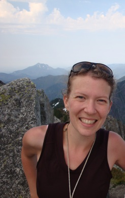

About Kristen

I grew up in Seattle, but headed east of the mountains to attend Whitman College, where I received a Bachelor of Arts in Physics and minor in mathematics in 2005. After college, I lived in Washington, D.C., for most of a year before returning to Seattle to attend the University of Washington in my hometown. I received a Masters of Science in Applied Mathematics in June 2007, and a Ph.D. in Mechanical Engineering in June 2012. I am currently a post-doc in Oceanography at Texas A&M University.
Outside of academics, I have always been active in the outdoors. I began climbing mountains when I was 15 and have been doing so ever since. In high school I also started playing lacrosse, which I played all through high school and college and hope to pick up again soon. Running has been a part of my life since about 1998. I've run numerous half marathons, and completed my first marathon in October 2006 (Marine Corps) and second marathon in April 2009 (Big Sur). I also try to participate in an ultra run once a year somewhere around the West Coast with some good friends. I enjoy taking pictures with a point-and-shoot or my iPhone when I'm hiking, and I often post them online.
kthyng at tamu.edu